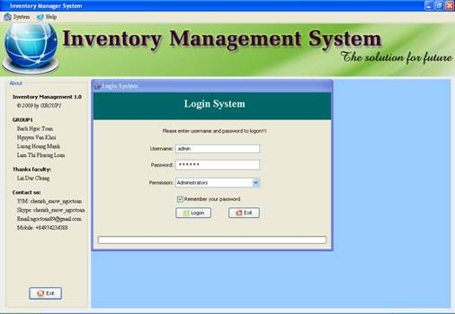
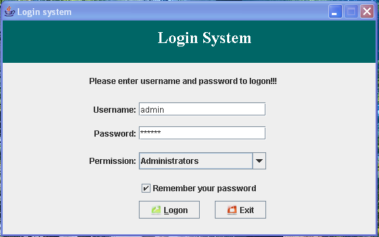
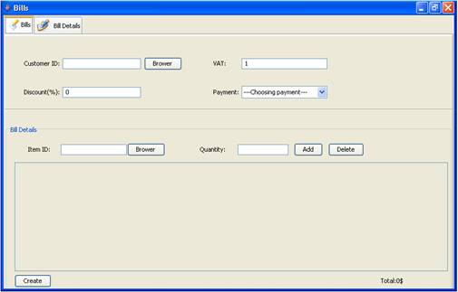
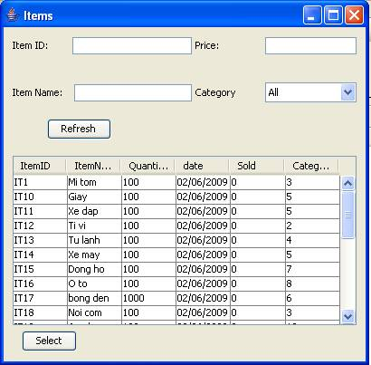
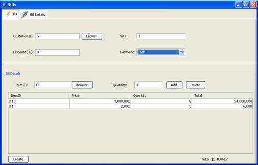
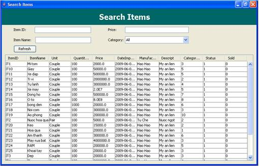
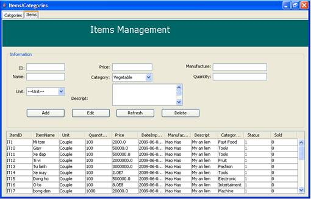
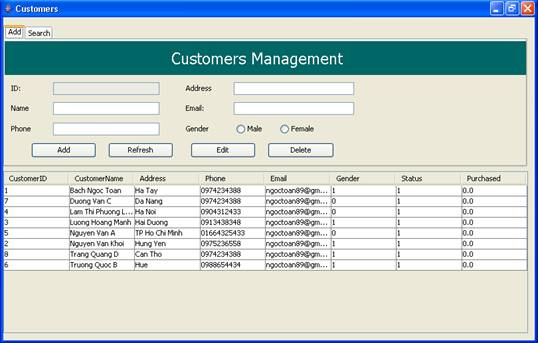

To day, applications to life more than. And computing and informatics is being developed so fast. Management a shop or a inventory with a large amount data stored.
Management bills, Tran tract and information of customer in a day will very difficult if you done by hand.
That is objectives of Inventory Management System, which we provided here.
This is application software has functional help sales, inventory manager, sales manager and administrator easy view, validate and manipulation information of customer, bills and categories product. Beyond, systems support administrator statistics numeric about
Functional of application has been developed to provide a lot of benefit to user. Help to management inventory easier. All business process faster and correctly.
Base Java programming language can run on any platform. Your application can execute even on many platform difference if they setup Java Runtime Environment .Therefore system will implemented widely and reality higher.
User Manual:
Execute InventoryManagement2.jar
A window will show with a form for Sales, Sales Manager, Inventory Manager or Administrator log in system to manage.

This is main windows of application after administrator’s login.
If you login by an administrator user, you would have entire permission access to functional.
And if you login by a user sales, sales manager or inventory manager, system would display permission corresponding

This tab has 2 sub tabs: Bills and Bill Details.

User can make sale bill at here. Enter customer code, discount, VAT. You can easier to select customer by click Browse and choose a customer and then click Select.

To add bill details, enter product code, quantity wants to sell and click Add. You also can easier choose Product by click Browse and select one.

To delete a detail of bill, select it in the below table and click Delete.
After all, click Create to make a bill.
You can Bill details bills created by go to tab Bill details. Select a row in Bills table and the Bill Detail table will show you all details of this selected bill.
If number of bills is too much and you can also find it quickly by use Search. You can search by Date or Customer or both.
Like sale bill tab, but this tab help you make purchase bills.
At this tab, you can search, add and edit products.
To search, you can enter one or more of details like code, name, price from, to.etc..

To add a product, you change to add tab and enter all details about this product. Finally click Add to submit. If you want to clean all box, click Reset Form.

Like to product tab, you can search, add and edit customers in this tab.
